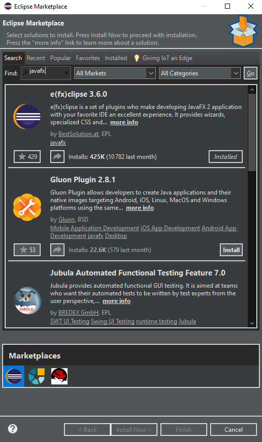

Java FX
Comment faire pour que eclipse reconnaisse que j'utilise Java FX et donc comment faire pour faire marcher Java FX
Pourquoi utiliser Java FX par rapport à Swing ?
Nous avons fait le choix de vous présenter cette extension plutôt que l'autre. Théoriquement elles marchent bien toutes les deux. Cependant, jfx (java FX) est, nous pensons, plus facile à prendre en main car plus récente.
Installer JavaFX
Installer e(fx)clipse
Pour cela il faut ouvrir eclipse puis que vous alliez dans : Help>Eclipse Marketplace..

Ensuite dans la barre de menu il faut taper "javafx" puis appuyer sur entrée. Il vous suffit de cliquer ensuite sur installer et d'attendre que le téléchargemetn se termine pour relancer eclipse.
⚠️La progression du téléchargement se trouve en bas à droite de la fenêtre principale et il ne faut pas fermer eclipse avant la fin.
Faire Fonctionner Java FX
Vous aviez quand même pas cru qu'il suffisait d'installer jfx (je vous rassure on est tous passé par là).
Ce qu'il vous reste à faire maintenant c'est de télécharger les fichiers jars (la version 11 marche bien)
Ensuite il faut spécifier à votre ide que vous comptez utiliser ces jars. Pour cela il faut faire clique droit sur le dossier de votre projet et cliquer sur build path>Configure Build Path

Allez ensuite dans l'onglet "Libraries" et sélectionnez "ModulePath" puis cliquez sur "add External Jars"

Allez dans le dossier que vous avez téléchargé et dézippé ("java-sdk-11.02" par exemple) puis dans "lib" et sélectionnez tous les jars

C'est bon, vous avez finis et pouvez maintenant utiliser jfx sans soucis.